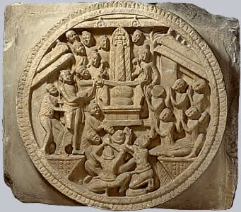

Pillar of fireThe Buddha is sometimes represented as a pillar of fire. The fire is thought of as the centre of the universe which stretches as a pillar between Earth and Heaven. 
This is part of a railing from the Great Stupa at Amaravati showing the pillar of fire. |